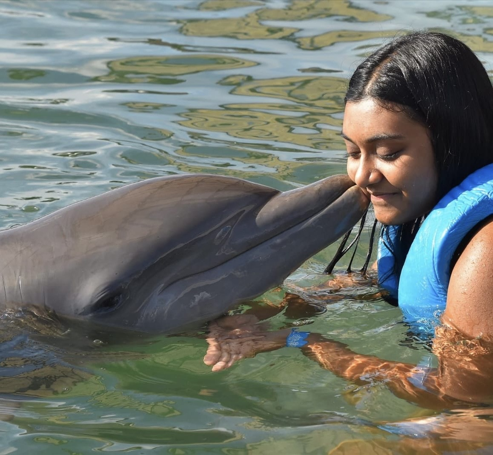
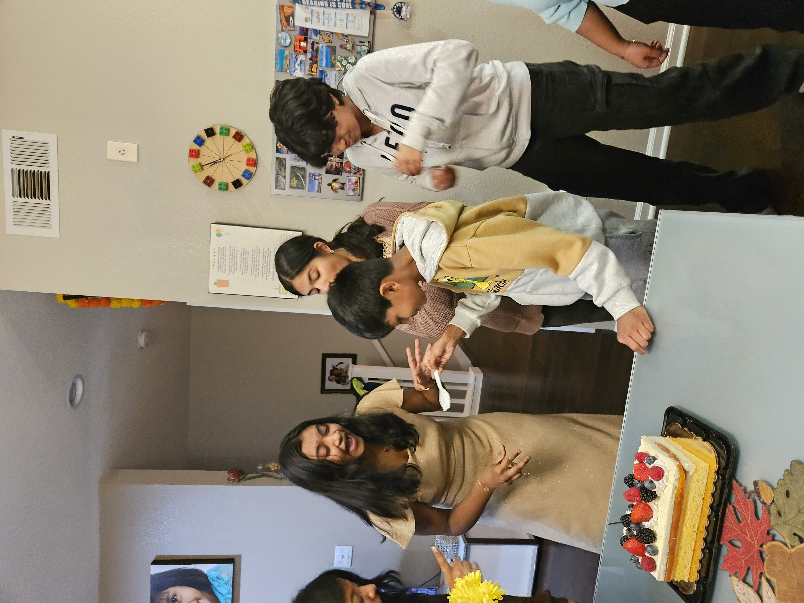
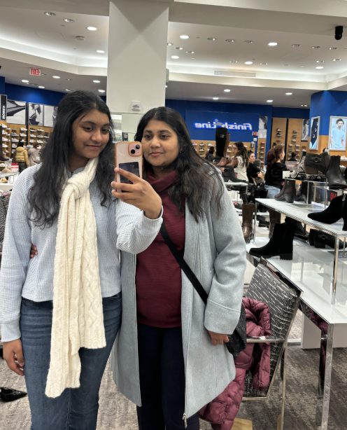
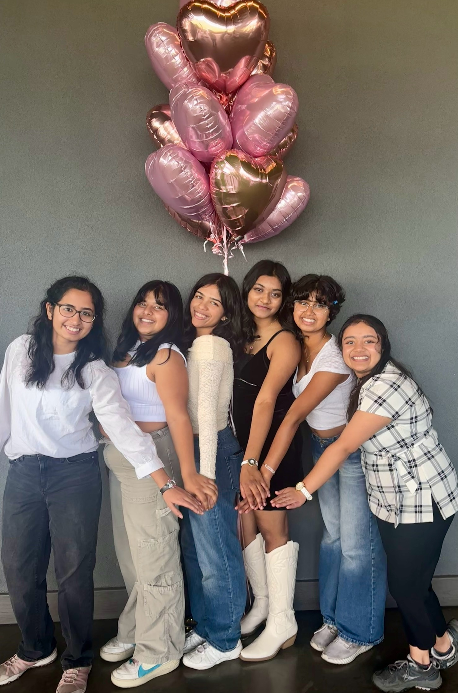
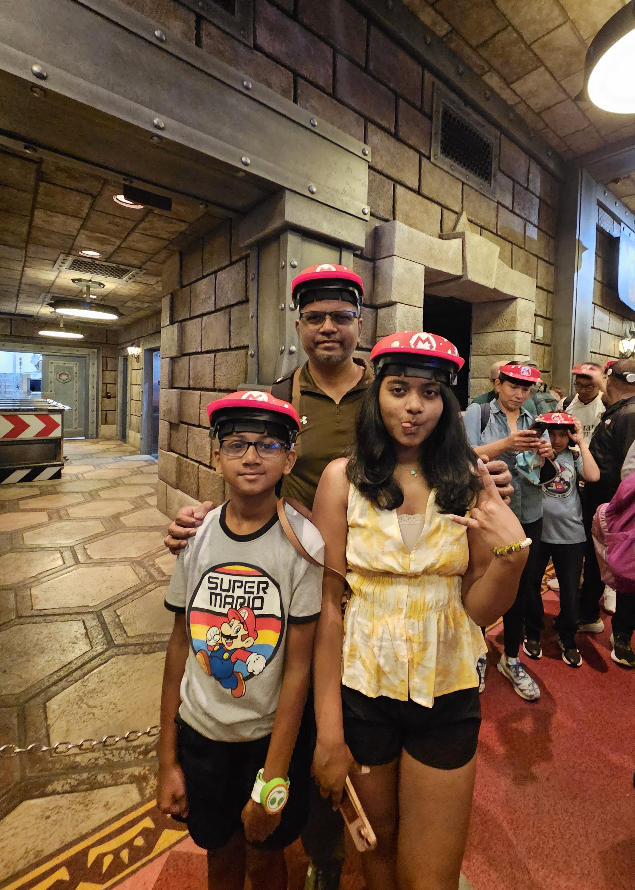
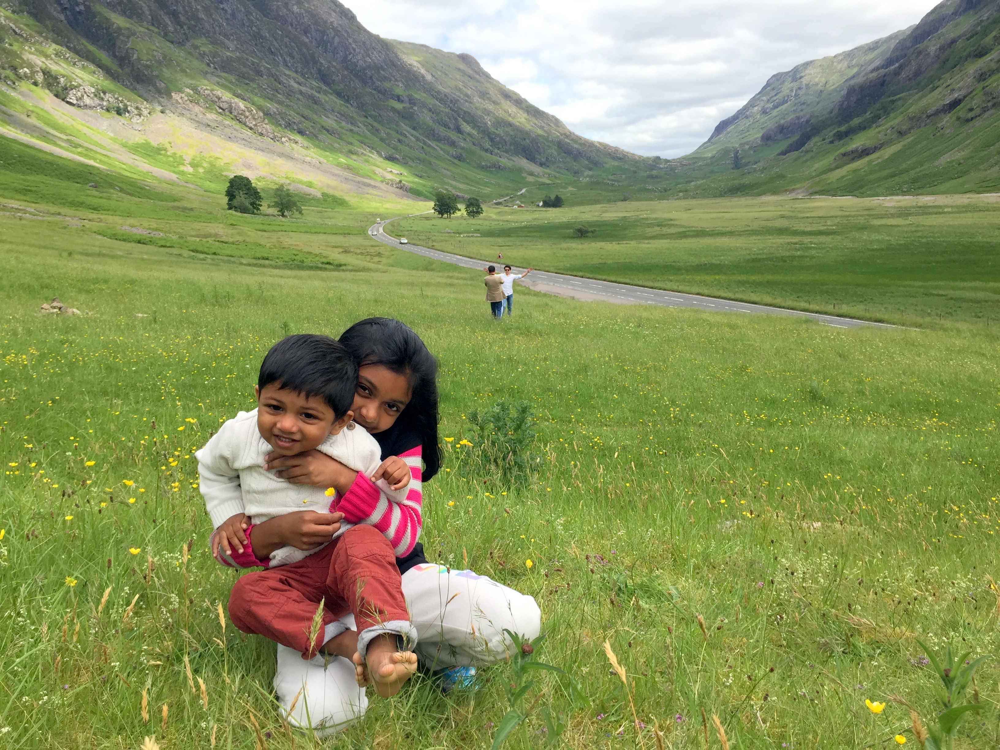

This site shows my creative journey as a designer, speaker and storyteller. I love connecting with people around me!







Hi! I'm a freshman at USC. I am currently majoring in Cognitive Science. I am very passionate about the intersection between creativity and communication. When I was younger, I was very introverted but after my public speaking journey in high school, I began loving to talk to other people and make new connections since then. I've explored my love for public speaking through Speech and TED talks. I also love desgn because it helps unlock the creative side of me. I have extensive experience in figma, flutterflow and canva.
SpeechMate.AI App
How do we prevent the communication gap between students and faculty, especially when students are unmotivated to fill out course evaluation feedback forms?
View Project

Interactive Dashboards for Participatory Analytics
How do we prevent the communication gap between students and faculty, especially when students are unmotivated to fill out course evaluation feedback forms?
View Project